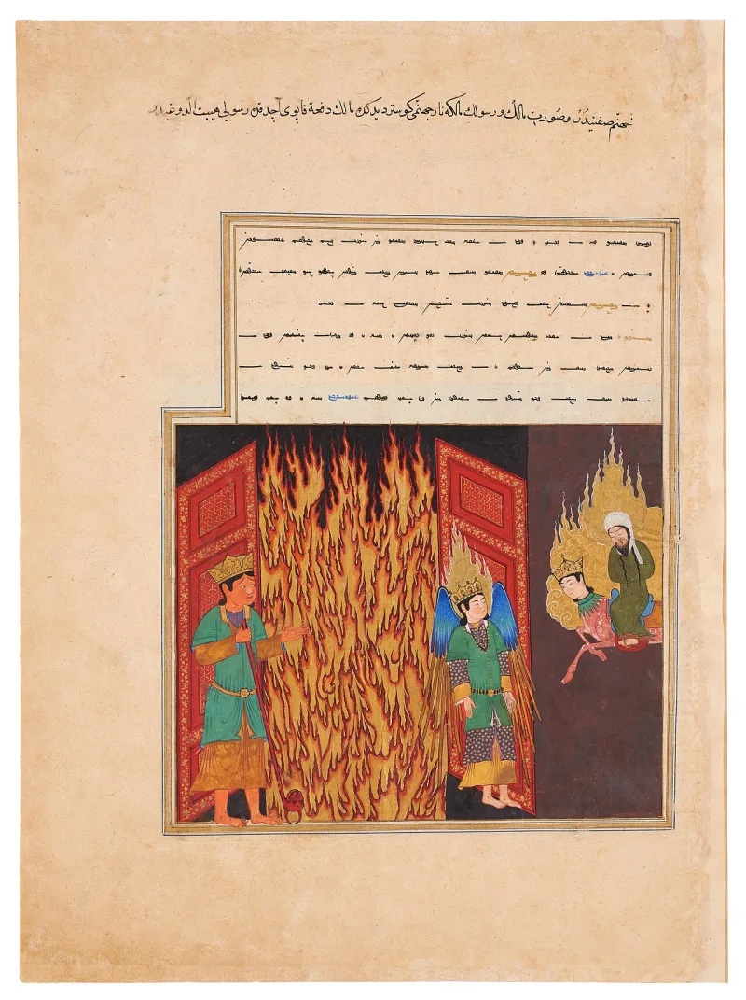
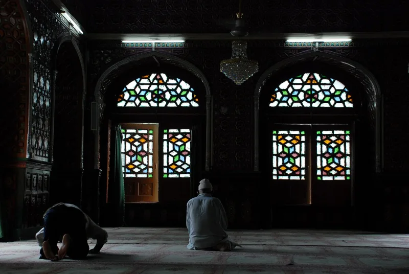
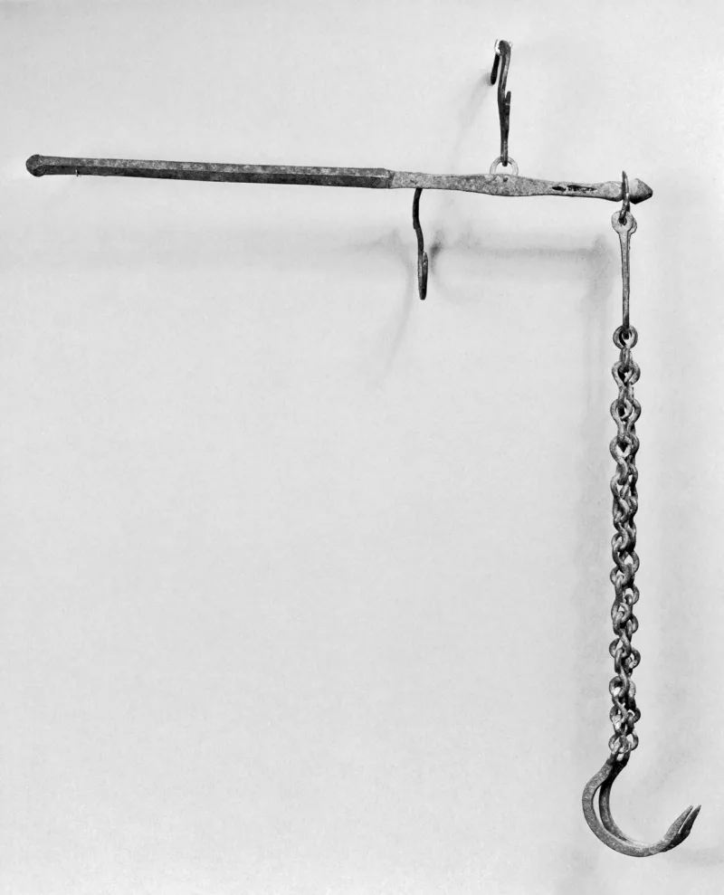

The facts sit in Islam's own trusted sources. You can make this point from their books alone.
It is a weighing. "Those whose scales are heavy — they are the successful; those whose scales are light — they have lost their souls, in Hell abiding" (Quran 23:102-103; also 101:6-9; 7:8-9).
Love is conditional: "Allah loves not the disbelievers" (3:32).
Even for Muhammad. "By Allah, though I am Allah's Messenger, I neither know what will happen to me, nor to you" (Sahih al-Bukhari 7018, echoing Quran 46:9).
And: "none of you will enter Paradise by his deeds... not even I, unless Allah covers me with mercy" (Sahih Muslim 2816).
God shows love for sinners while they are still sinners (Romans 5:8). Salvation is by grace through faith, not by works (Ephesians 2:8-9).
Sin is carried by a substitute (Isaiah 53:5-6). And assurance is offered as knowledge: "that you may know that you have eternal life" (1 John 5:13).
The Yaqeen Institute and Ibn Qayyim answer that this is not cold bookkeeping. Allah's mercy prevails over His wrath.
One good deed counts ten to seven hundred times over, while a sin counts once (Sahih al-Bukhari 6491). Sincere monotheism finally delivers from eternal Hell.
Sahih Muslim 2816 itself puts entry to Paradise on mercy, not on earning — which is close to a doctrine of grace. And the absence of guaranteed assurance is a feature: it keeps the believer between fear and hope.
Quran 3:32 is about approval of those who persist in rejection, not about a lack of compassion (7:156). Bukhari 7018 also predates 48:1-2.
They admit the structure themselves, and this is the case that leads most directly to the gospel. The reply is fair as far as it goes.
But mercy given through a weighing frame, with no substitute and no offered assurance, is a different thing from Romans 5:8 and 1 John 5:13. Notice too that 48:1-2 rescues Muhammad specifically, which underlines that others have no such guarantee.
"If you died tonight, would you know? I can tell you why a Christian can."



They say mercy runs through it all, and entry to Paradise is a gift.
The Yaqeen Institute's papers on salvation, and Ibn Qayyim on fear and hope, answer that Islam is soaked in mercy. It is not cold bookkeeping. Allah's mercy prevails over His wrath. One good deed counts ten to seven hundred times over, while a sin counts once (Sahih al-Bukhari 6491). Sincere belief in one God finally saves from eternal Hell. And Sahih Muslim 2816 puts entry to Paradise on Allah's mercy, not on earning. That works much like a doctrine of grace.
The lack of a bold guarantee is a feature. It holds the believer between fear and hope. That makes for humility, and for taking sin seriously. A promised salvation invites licence, and Christians themselves argue over eternal security. Quran 3:32 is about Allah's approving love for those who keep on rejecting. It does not deny his wide compassion (7:156). And Bukhari 7018 comes before the verse on Muhammad's forgiveness (48:1-2).
Strong for you: they grant the structure, and this leads straight to the gospel.
This entry sets out a difference in structure, and every part of the Islamic side is granted. Salvation is weighed on scales. No assurance is offered in the text. God's love is conditional in the Quran's own wording. And Muhammad's own doubt is recorded. Note that 48:1-2 rescues Muhammad in particular. That underlines that others have no such guarantee.
The steelman honestly complicates the caricature, since Muslim 2816 does put final entry on mercy. But this mercy comes through a frame that weighs merit. There is no substitute to bear sin, and no assurance on offer. That is a different kind of thing from Romans 5:8 and 1 John 5:13. This is the case that leads most directly to the gospel.